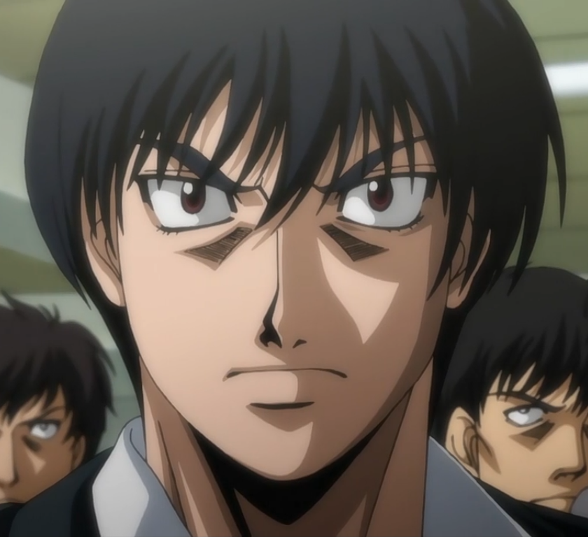

Bienvenue sur mon site
Dans ce site je vais vous presenter trois animés de trois types différents
qui selon moi mériterais plus de reconnaissance. Le premier est donc Re:Zero qui est un Isekai, le
deuxième est un classique, Hajime No Ippo qui est un Shonen et efin un récent, Vinland Saga qui est
un Seinen.
Bonne visite ;)


Ceci est un projet pour le BTS SIO en première année.
Re:Zero
Type d'anime: « Isekai »
« Isekai » signifie « autre monde », « monde parallèle ». Dans ces histoires, le héros, la plupart du temps un homme banal et sans succès, se retrouve projeté (par exemple après réincarnation ou connexion à un jeu) dans un autre monde. Dans ce dernier, même s’il n’a pas de compétences particulières, le personnage principal n’affrontera plus autant de difficultés qu’avant et pourra endosser une nouvelle stature ou simplement profiter de cette nouvelle vie.
Synopsis:
L’histoire suit le quotidien de Subaru Natsuki, un lycéen de notre époque qui est transporté dans un monde fantastique. Il se retrouve à faire équipe avec Émilia, une demi-elfe aux pouvoirs magiques qui l’a sauvé. Mais très vite, ils sont tués par une mystérieuse assassine… Subaru découvre que lorsqu’il meurt, il se réveille au même endroit de sa téléportation pour revivre sa journée et lui seul sait ce qu’il s’est passé avant qu’il « meure ». Mais son pouvoir de remonter le temps sera-t-il suffisant pour éviter tous les événements funestes qui le toucheront ?
Personnages:
-Natsuki Subaru : Jeune lycéen qui donnerai sa vie pour sauver ses proches dans ce monde.
-Émilia et Puck : Semi-elfe et son esprit élémentaire qui participe à l'élection royale.
-Elsa Granhiert : Assassine surnomée "l'eventreuse".
-Reinhard Van Astrea : Chevallier de la ville qui fait partie de la famille royale Astrea.
-Felt et Rom: Voleuse proffesionelle qui partcipe aussi à l'élection royale suite à la demande de Reinhard et le barman qui l'a protège.
Hajime No Ippo
Type d'anime: « Shonen »
Le mot « Shonen » signifie en japonais « garçon et adolescent ». Il ne désigne pas à proprement parler un type, mais plutôt une ligne éditoriale du manga qui comme son nom l’indique, cible majoritairement un public assez jeune et de sexe masculin.
Synopsis:
Ippo Makunouchi est un jeune garçon de 16 ans tout ce qu'il y a de plus ordinaire. Il passe son temps libre à aider sa mère à tenir son affaire de pêche, de ce fait il n'a pas d'amis. Un jour, alors qu'il se fait maltraiter par une bande de jeunes plus âgés que lui, Takamura Mamoru, un des plus grands boxeurs, lui vient en aide et l'emmène dans son club de boxe pour le soigner. Une fois remis sur pieds, Ippo s'essaye à la boxe et il se révèle posséder une force incroyable. Suite à cet évènement, Ippo demanda à Takamura de lui enseigner la boxe, qui ce dernier le mit au défi d’attraper 10 feuilles d’un arbre. Une semaine plus tard, Ippo y parvient, ce qui entraînera la rencontre de notre protagoniste et le coach Genji Kamogawa, qui lui décida de le prendre sous son aile.
Personnages:
-Ippo Makunochi : Jeune pro-boxeur entraîné par le coach Kamogawa et inspiré par Takamura.
-Takamura Mamoru : Champion de plusieurs catégories qui reste invaincu.
-Genji Kamogawa : Ancien boxeur, Genji est devenue le coach et le president du club Kamogawa.
-Ichiro Miyata : Jeune pro-boxeur qui voit Ippo comme son éternel rival.
-Aoki Masaru/Kimura Tatsuya : Deux boxeurs qui peine à gagner sur le ring.
Vinland Saga
Type d'anime: « Seinen »
Seinen littéralement “pour jeune homme”, le genre cible les jeunes adultes. Akira de Katsuhiro Ôtomo, premier Seinen publié en France, ainsi que Yotsuba de Kiyohiko Azuma illustre la richesse de cette catégorie.
Synopsis:
Mêlant personnages et évènements historiques avec de nombreux éléments fictifs, Vinland Saga est le récit de la vie d'un jeune islandais, Thorfinn Thorsson. Ce fils d'un illustre guerrier repenti verra sa vie basculer lorsque son père est assassiné par des pirates mené par le rusé Askeladd
Personnages:
-Thorfinn Karlsefni : Jeune garçon qui voit son père Thors se faire assassiner deavnt lui lorsqu'il était jeune. Depuis, sa rage de guerrier le pousse à se venger de Askeladd.
-Thors Snorresson : Père du jeune Thorfinn qui était connu sous le nom de "Troll of Jom".
-Askeladd : Viking qui assassina lâchement Thors et est le capitaine d'une troupe de Danois.
-Thorkell : Viking qui dirige les "Jomsvikings" possedant une force monstrueuse.
-Knut : Jeune prince viking très réservé qui est guidé par Ragnor.